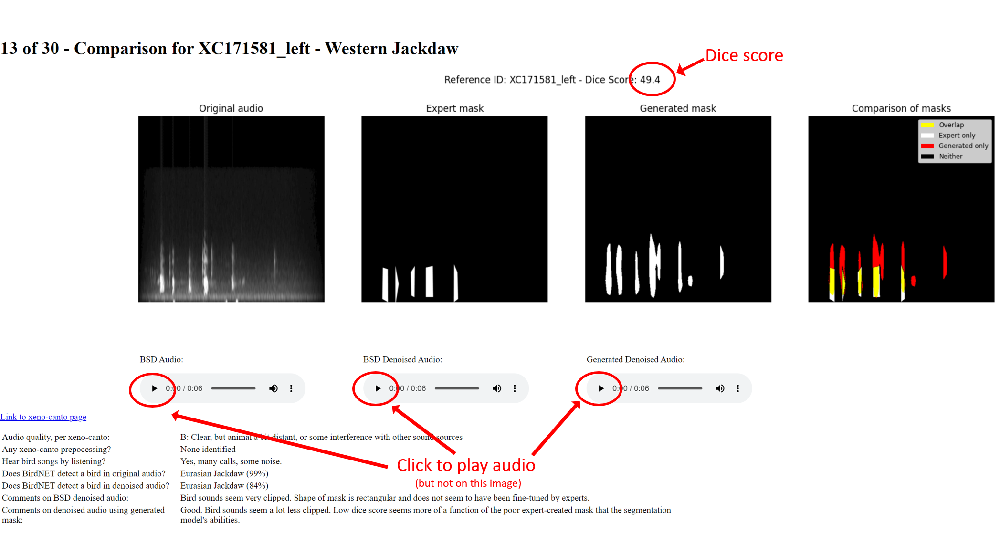

MIND6004 - Feasibility Study
This page supports my MIND6004 feasibility study.
Audio illustration
This page contains a link to a page that illustrates 30 samples from the BirdSoundsDenoising dataset with a varying range of dice scores, shown in increasing order
- The name of the audio file and the bird species being shown
- An image of the original audio file converted into a spectrogram
- An image of the expert-created mask that is treated as the ground-truth
- An image of the mask created by the DeepLabV3 segmentation model
- The dice score of the two masks (multiplied by 100), with 0.0 meaning no similarity, 100 meaning perfect similarity
- A button to play the original audio file plus the denoised audio files created with each mask
- A link to the recording on the xeno-canto website
- Details on the call quality (per xeno-canto)
- Details of whether BirdNET can detect a bird species in the original audio file or the denoised audio files created with the expert mask. The percentage shown is BirdNET's confidence level.
- Comments prepared by Mark on the original audio and the two denoised audio files.

Here is the link